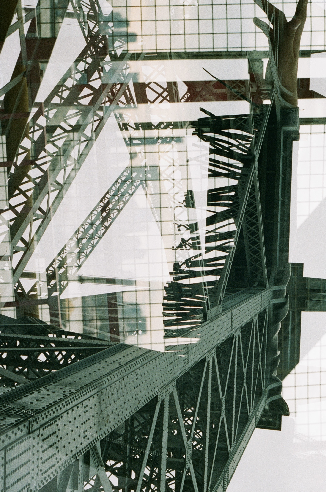
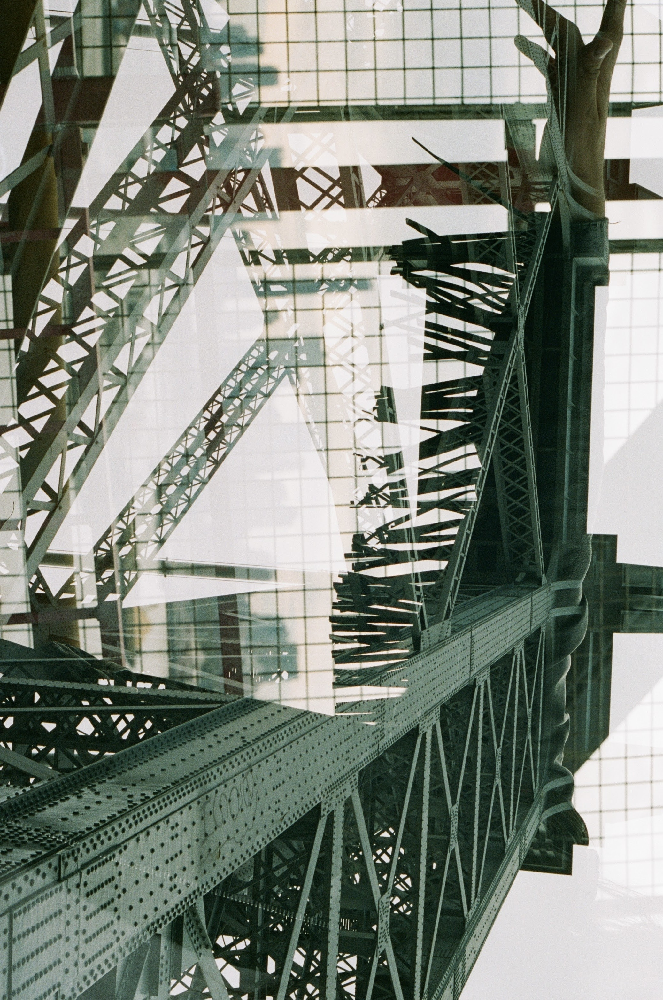

Skip to main content
Featured photos over background
 This photo was taken on a film camera along the canal in London. It is vertical, with plants in the top left corner and the canal running through the photo from the bottom right corner. The canal is dark grey/blue. A dead rat is floating in a ballerina style pose. It is beautiful.
This photo was taken on a film camera along the canal in London. It is vertical, with plants in the top left corner and the canal running through the photo from the bottom right corner. The canal is dark grey/blue. A dead rat is floating in a ballerina style pose. It is beautiful.
 A friend was djing at a dark bakery in London. This photo is of the dj deck and was taken with a long exposure so the lights and buttons are longer than natural and distorted.

This picture is a double exposure with 2 images superimposed over each other. Both were taken on the Brooklyn bridge. The first is of the bridge arches and the other is of a fringe jacket. The jacket fringe mixes with the bridge wires.
A friend was djing at a dark bakery in London. This photo is of the dj deck and was taken with a long exposure so the lights and buttons are longer than natural and distorted.

This picture is a double exposure with 2 images superimposed over each other. Both were taken on the Brooklyn bridge. The first is of the bridge arches and the other is of a fringe jacket. The jacket fringe mixes with the bridge wires.
 This is a picture taken of The Artists Pallet in Death Valley, California. It's a bright sunny day and a picture of the mountain. Colors are very bright and include browns and greens.
This is a picture taken of The Artists Pallet in Death Valley, California. It's a bright sunny day and a picture of the mountain. Colors are very bright and include browns and greens.